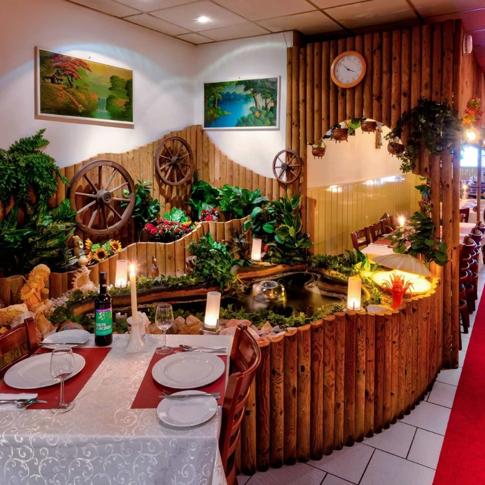
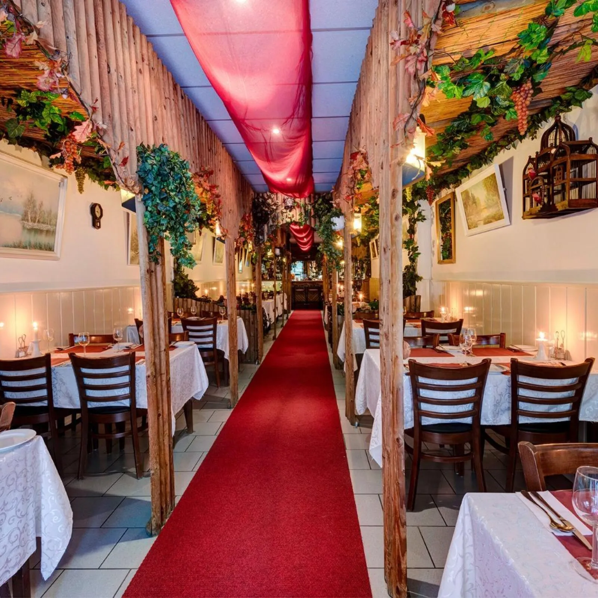
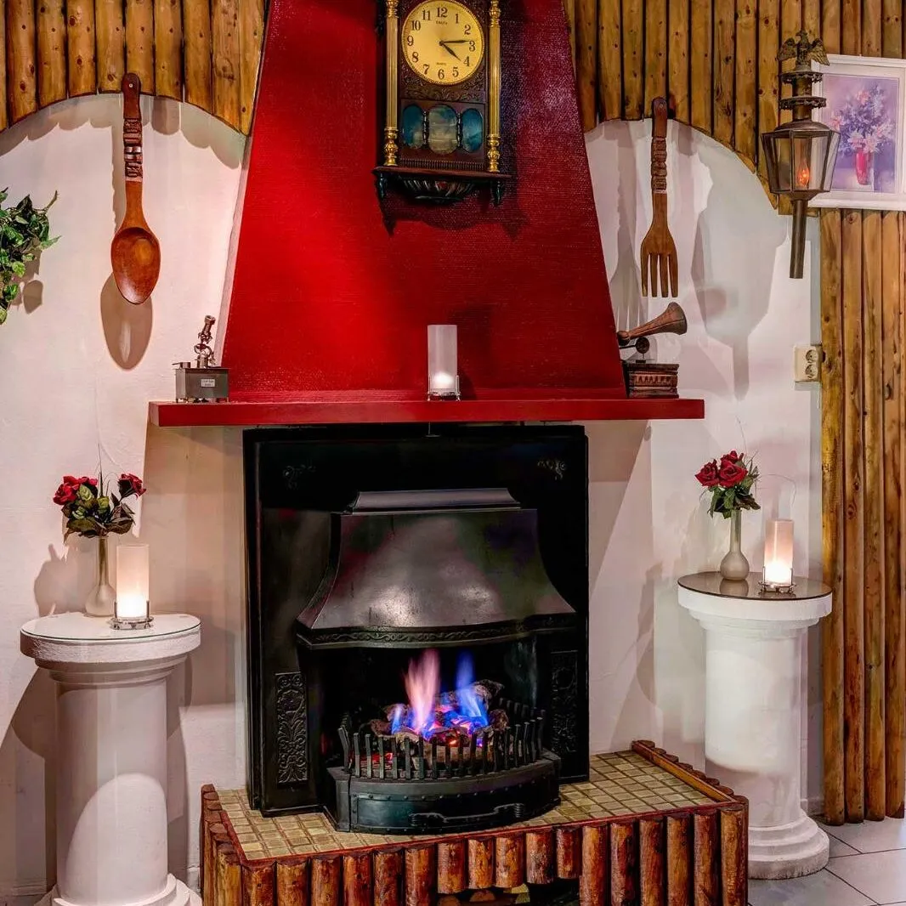
Specialiteiten Restaurant
Bistro ’t Trefpunt
Frans-Hollandse keuken in het hart van Zevenaar, sinds april 2000
Elke dag open van 16.00 tot 22.00 uur
Gezellig en knus, met een haardvuur in de winter
Bij Bistro ’t Trefpunt eet u gerechten uit de Franse en Nederlandse keuken, al meer dan 25 jaar. Voor elk gerecht gebruiken we verse producten, en onze chef heeft ruim 40 jaar ervaring in de Frans-Nederlandse keuken.
Het restaurant heeft ruim 60 zitplaatsen en is ook geschikt voor feesten en partijen. Aan onze kleine bar staan alcoholische dranken klaar.
- Speciale wensen? We houden rekening met allergieën (bijvoorbeeld glutenvrij eten) en vegetarische wensen.
- Gewoon binnenlopen mag. Graag zien we uw reservering tegemoet, maar u mag te allen tijde bij ons naar binnen lopen.
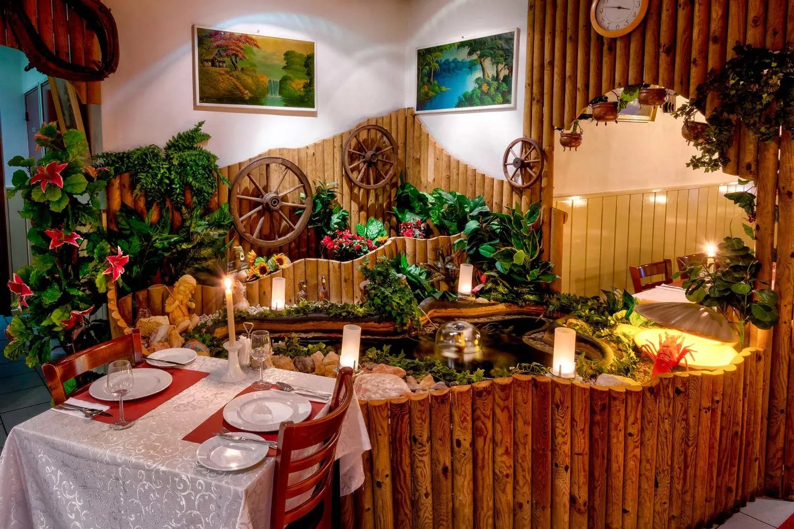
À la carte
Al onze hoofdgerechten worden geserveerd met twee aardappelgarnituren, zes soorten verse groentegarnituren en verse rauwkostsalade.
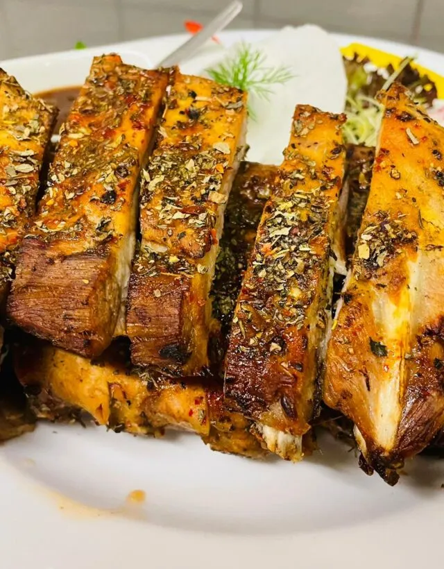
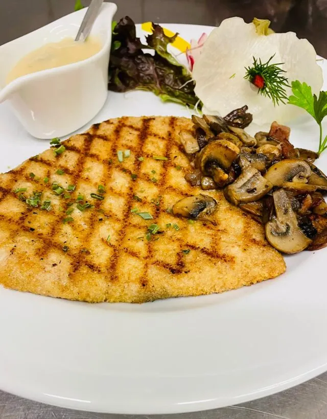
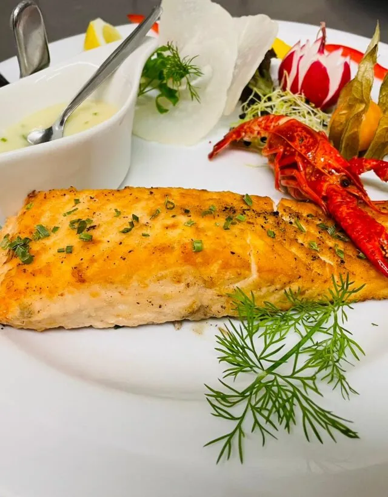
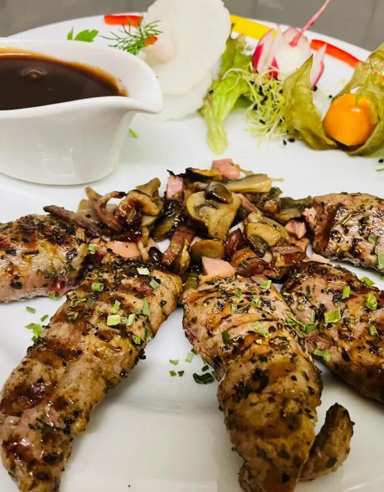
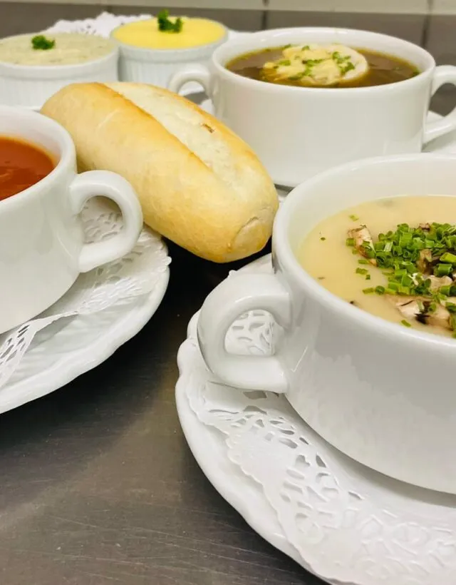
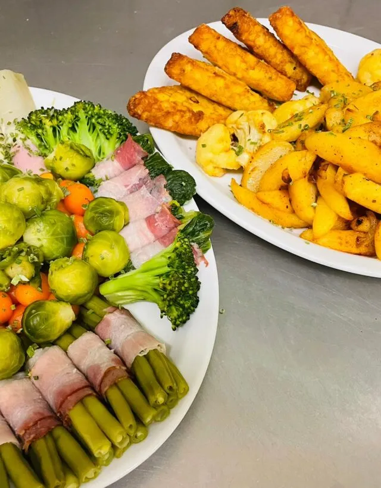
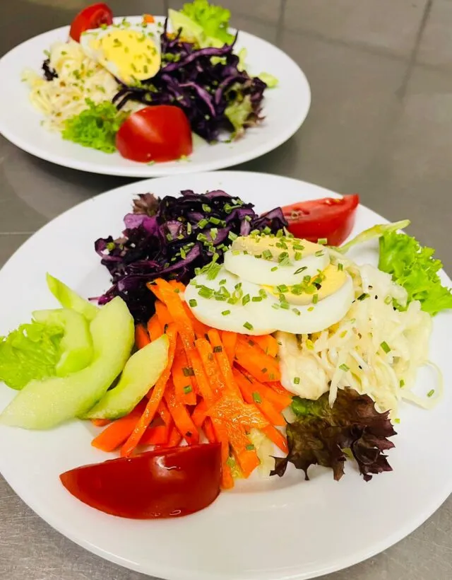
Allergie? Meld het ons, dan houden we er rekening mee.
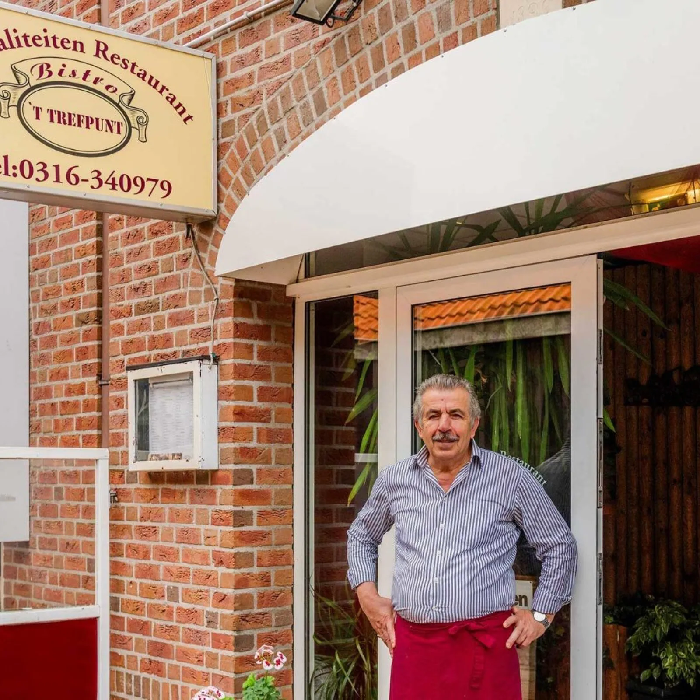
Ramazan Köprülü, chef en eigenaar
“Toen ik 16 jaar oud was, ben ik begonnen bij restaurant Begijnen Molen bij park Sonsbeek in Arnhem. Ik ben daar in de keuken begonnen en opgeklommen tot chef-kok.”
Na twintig jaar ging Ramazan aan de slag in productiewerk, maar zijn grote liefde bleek toch de horeca. Hij volgde de SVH-opleiding Algemene ondernemersvaardigheden voor de horeca, ging op zoek naar een geschikte plek en vond die aan de Wittenburgstraat 10 in Zevenaar. In april 2000 opende hij daar zijn eigen restaurant.
- 2000 Opening van het restaurant, in april
- 2010 10-jarig jubileum gevierd
- 2020 20-jarig jubileum gevierd
Uit ons gastenboek
“We kregen een welkomstvoorafje en ook nog een broodsmeersel van het huis. Het voorgerecht en hoofdgerecht waren maatje XL. Het smaakte allemaal overheerlijk. (…) Een aanrader voor iedereen!”
“Een zeer goed en tevens gezellig restaurant in het centrum van Zevenaar, met een zeer goed menu en ook erg lekker eten voor een in verhouding zeer goede prijs.”
“Leuk en gezellig restaurant, kunt hier altijd heerlijk eten. Vanavond ook weer gezellig gegeten en eten was perfect. Echt een aanrader om hier te gaan eten.”
Een cadeaubon van ’t Trefpunt
Een avond uit eten cadeau geven aan een vriend, vriendin, kennis, collega of familielid. De bonnen zijn te combineren en af te halen in het restaurant.
- €10
- €20
- €30
- €40
Kom ons team versterken
Bistro ’t Trefpunt is een specialiteitenrestaurant dat Zevenaar de Frans-Nederlandse keuken laat proeven, bekend om het romantische en gezellige interieur en een goede prijs-kwaliteitverhouding. We zoeken collega’s.
Horecamedewerker bediening
Jij bent het gezicht van ons restaurant. Je ontvangt gasten en geeft ze een warm welkom bij binnenkomst. Je brengt ze naar hun tafel, neemt de bestellingen op en serveert hun drankjes en maaltijden. Met drie borden lopen is in het begin lastig, maar dat leer je zo! Je zorgt ervoor dat het restaurant netjes en schoon blijft, en mede dat de gast 100% tevreden naar huis gaat.
Wat verwachten we van jou?
- Je bent sociaal gedreven en gaat makkelijk om met gasten
- Je wilt jezelf ontwikkelen in de horeca
- Je kunt tegen werkdruk
- Je bent enkele avonden per week inzetbaar (17.00 tot 21.00 uur); weekenden en feestdagen zijn een pre
- Je woont in de omgeving van Zevenaar
Wat mag je van ons verwachten?
- Goede begeleiding
- Leuke collega’s en gasten
- Doorgroeimogelijkheid
Horecamedewerker keuken
Jij zorgt ervoor dat alles in de keuken spic en span is. Je wast en droogt de borden met onze horecavaatwasser. Vind je het ook leuk om te helpen met de gerechten, zoals het maken van een rauwkostsalade? Dan kan dat er ook bij.
Wat verwachten we van jou?
- Minimaal 16 jaar
- Je wilt jezelf ontwikkelen in de horeca
- Je kunt tegen werkdruk
- Je bent enkele avonden per week inzetbaar (17.00 tot 21.00 uur); weekenden en feestdagen zijn een pre
- Je woont in de omgeving van Zevenaar
Wat mag je van ons verwachten?
- Goede begeleiding
- Leuke collega’s en gasten
- Doorgroeimogelijkheid (bijvoorbeeld naar de bediening)
Solliciteren? Stuur je gegevens met je cv of LinkedIn-profiel naar info@bistrotrefpunt.nl. Vragen over de vacature? Bel 0316 340 979.
Een tafel reserveren
Bel ons op 0316 340 979 of vraag hier een reservering aan. Uw reservering is definitief zodra u van ons een bevestiging heeft ontvangen.
Maandag tot en met zondag
16.00 tot 22.00 uur
Contact en route
Bistro ’t TrefpuntWittenburgstraat 10
6901 AN Zevenaar
0316 340 979
info@bistrotrefpunt.nl
Een vraag, opmerking of iets anders? Bel of mail ons, dan nemen we contact met u op.
Plan uw route